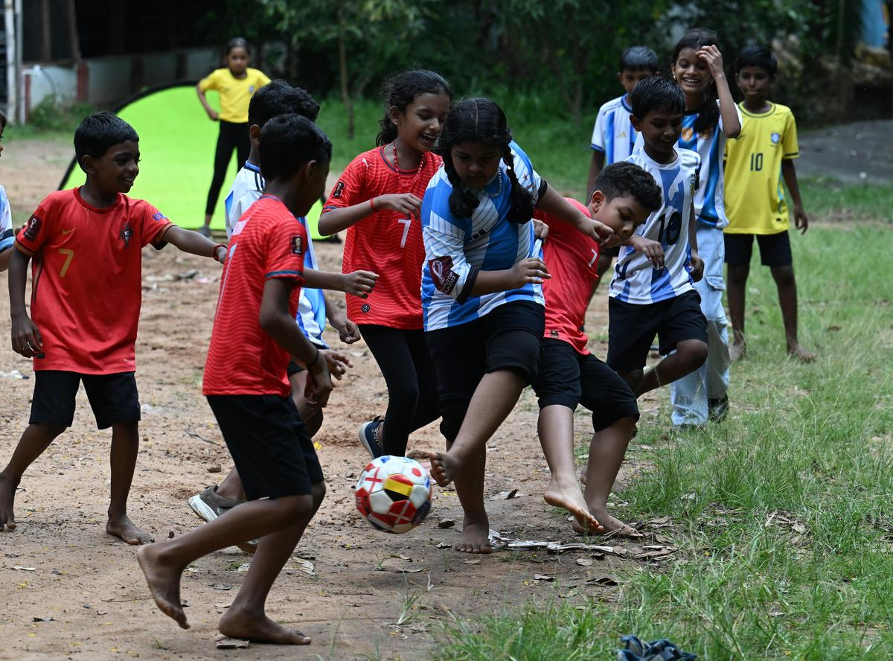
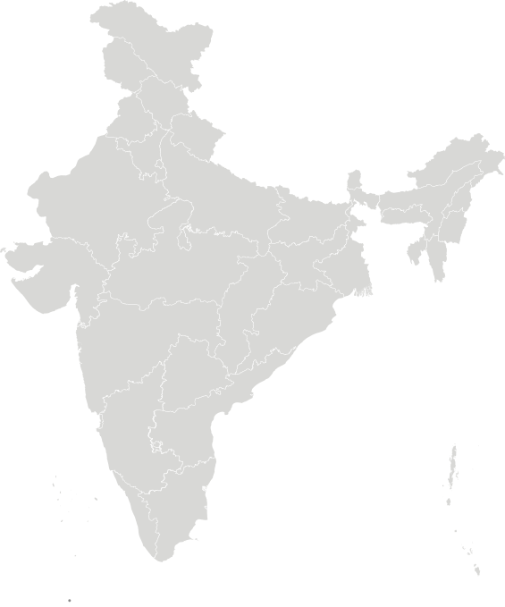
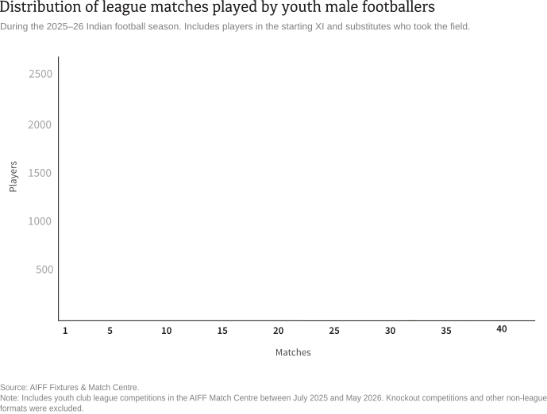

The Indian men's national team has never played at the FIFA World Cup. Its closest opportunity came in 1950, when it was awarded a place after several other Asian teams withdrew. More than seven decades later, the Indian World Cup debut remains elusive, even as football remains one of India's most popular sports.
In 2023, the All India Football Federation (AIFF), India's football governing body, released Vision 2047, a long-term strategy to transform the country into one of Asia’s leading football nations.
Vision 2047 describes a robust competition structure as "at the centre of football development" and acknowledges that players in India's top leagues receive fewer guaranteed matches than their counterparts in leading football nations. To address this gap, it sets a target of ensuring every male youth player plays at least 35 competitive league matches each season by 2027.
An analysis of 4,936 matches involving 547 clubs and academies during the 2025–26 season found that almost no player reached the benchmark. Only 10 of the 19,718 players in the analysis—0.05%—recorded at least 35 appearances. The median player made just five appearances, and most players participated at only one level of the football system: state, district or national. By contrast, players with the highest totals generally accumulated appearances across multiple competitions and levels of the football system.

India’s youth football ecosystem
League football in India is organised across national, state and district levels. This analysis identified 51 youth leagues during the 2025–26 season: 4 national, 9 district and 38 state leagues.

National youth leagues
National youth leagues bring together clubs and academies from across the country. They made up only 8% of the competitions in the analysis, but accounted for 36% of all matches. In other words, national competitions were substantially larger, on average, than a state or district league. Three of the four national leagues were organised by the AIFF itself.
State youth leagues
State youth leagues, organised by AIFF-affiliated state associations, feature clubs and academies from within each state. In this dataset, they made up nearly 75% of competitions but just over half of matches, making them smaller on average than national leagues. Provision was uneven: 5 states out of 14 hosted half of all state leagues, with Goa organising the most at seven.
District youth leagues
District youth leagues, organised by district football associations, feature clubs and academies from within a district. In this dataset, they made up 18% of competitions but only 10% of matches, making them the smallest leagues on average. They were identified in only two states: Maharashtra and Delhi.
How much football do young players actually play?
Together, the 51 youth leagues produced 4,936 matches during the 2025–26 season. The analysis then tracked each player across those fixtures to see how many reached the AIFF’s 35-match target. An appearance was counted when a player started or entered as a substitute.
The AIFF wants every male youth player to play at least 35 league matches each season by 2027.
Each bar shows the number of players who made a given number of youth league appearances during the 2025–26 season. Most players were clustered far below the AIFF’s target.
Only 10 of the 19,718 players in the analysis reached 35 appearances. That is just 0.05% of all players.
For most players, the season was confined to one competition and one level.
Among the 15,896 players who recorded one to 10 appearances—81% of all players in the analysis—95% played in only one competition, while 96% remained within a single level of the football system: state, national or district.
Among players with 11 to 20 appearances, participation across competitions and levels increased, but most still played in only one competition, and most remained within a single level.
Among the 3,256 players who recorded 11 to 20 appearances—16.5% of all players in the analysis—34% played in at least two competitions and 26% appeared across more than one level of the football system.
High appearance totals were rarely achieved through a single competition.
Among the 566 players with more than 20 appearances—2.9% of all players in the analysis—97% played in at least two competitions and 75% appeared across more than one level of the football system.
The most common pathway combined national and state leagues and was used by 64% of players in this group. Only 16 players reached more than 20 appearances through a single competition.
Reaching 35 was largely confined to players with access to multiple competitions and multiple levels.
Players with more than 20 appearances were already likely to combine competitions and league levels. Among the 10 who reached 35, that pattern was universal: all played in multiple competitions, and nine combined national and state leagues. Eight were linked to Goa-based clubs or competitions, reflecting the state’s broader concentration of high-appearance players.

This analysis does not explain why individual players fell short of the AIFF's target. Injuries, selection decisions and competitions not listed on the AIFF Match Centre could all influence the number of league matches a player records. It does show, however, that for the players captured in this dataset, reaching 35 league matches in the 2025–26 season was exceptionally rare.
Vision 2047 identifies increased competitive match exposure as a cornerstone of player development and of India's ambition to become one of Asia's leading football nations. One season before the AIFF's 2027 benchmark, the players in this dataset remained a long way from that goal.
About the methodology
- To assess progress towards the AIFF's target, this analysis collected data from the federation's official Match Centre, which publishes information on competitions, fixtures, team line-ups and match events. Competition records were used to identify league competitions, while match events were used to identify every player who appeared in a match, either in the starting XI or as a substitute.
- The analysis examined matches listed between July 2025 and May 2026, corresponding to the 2025–26 AIFF competition season. Because Vision 2047 sets a target for male youth club league football, the analysis included only male youth leagues involving clubs and academies. Many Indian competitions combine league and knockout stages; only those with a primary league component were included. Female and senior competitions, representative tournaments, primarily knockout competitions, futsal and beach soccer were excluded. Competitions were classified by level, age group, format and gender using an AI-assisted process. The classifications for level, age group and format had error rates below 10%, while the gender classification had an error rate of about 30%. This higher error rate means some competitions may have been incorrectly classified by gender.
- The final dataset contained 4,936 matches across 51 national, state and district youth leagues. It identified 22,855 listed players across those leagues, of whom 19,718 made at least one appearance as a starter or substitute, representing 547 clubs and academies.
- The dataset represents all publicly accessible AIFF Match Centre fixtures found within the date range. It may not include every competition organised by state associations or every officially played fixture if those were not registered with the AIFF.
- Of the 21,027 scraped matches, 13.4% had no published player lists for either team and were excluded. A further 3.2% were missing one team’s line-up and may therefore undercount appearances.